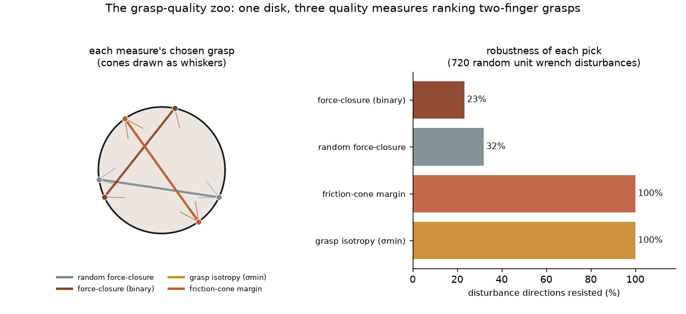

One object — a disk — gripped by two fingers, with the same thousands of candidate grasps scored by a family of grasp-QUALITY measures, from the binary force-closure test up to the grasp matrix's smallest singular value. Each measure picks the grasp it thinks is best; each pick is then validated against random wrench disturbances. Each shows what it can and can't tell you.
The rule: force-closure is a GATE, not a ranking. It says a grasp is valid (each contact's friction cone contains the grasp line) or not — but it says yes just as loudly to a barely-valid grasp as to a perfect one. To pick a robust grasp you need a continuous measure: the friction-cone margin (how deep inside the cones) or the grasp matrix's smallest singular value (worst-case force transmission). On this symmetric object both point at the same physically strongest grasp — the diameter.

| method | picks a valid grasp | robustness of its pick |
|---|---|---|
| Force-closure binary validity test | ✓ valid (127° grasp) | ✗ 23% resisted |
| Friction-cone margin continuous depth-in-cone | ✓ picks the diameter | ✓ 100% resisted |
| Grasp isotropy σmin of the grasp matrix | ✓ picks the diameter | ✓ 100% resisted |
| Random force-closure the weak baseline | — any valid grasp | ✗ 32% resisted |
The classic yes/no test: at each of the two contacts, is the line joining them inside the friction cone (angle to the normal < atan μ)? If yes at both, the two contact forces can cancel any small motion — the grasp is force-closure.
31% of sampled grasps pass. But it is binary: it accepts a lopsided grasp only 0.02° inside the cone just as readily as a perfect one. That barely-valid pick resists only 23% of random disturbances.
How DEEP the grasp sits inside the cones: the minimum over the two contacts of (cone half-angle − the grasp line's deviation from the normal), in degrees. Positive means force-closure; larger means more slack before a contact slips.
Ranks the valid grasps and picks the diameter — antipodal contacts whose cones straddle the grasp line with the full 26.5° margin. That pick resists 100% of the 720 disturbance directions, versus 32% for a random force-closure grasp.
Build the grasp matrix G whose columns are the friction-cone edge wrenches [fx, fy, τ] of both contacts, then take its smallest singular value (numpy SVD). σmin is the worst-case direction in which the grasp can resist an external wrench — a standard analytic quality metric.
Independently picks the diameter too, with the largest σmin = 0.894 (vs 0.858 for the weak force-closure grasp). Same pick as the margin measure, and it likewise resists 100% of disturbances.
What you get if you trust force-closure alone and pick any grasp that passes: here a 146° grasp, valid but only 9.8° deep in the cones. The baseline the continuous measures have to beat.
Valid by the binary test, but off-diameter: it resists only 32% of random disturbances — roughly a third of what the diameter grasp handles.
scripts/grasp_zoo_experiments.py, pure NumPy) — 3,846 candidate two-finger grasps sampled, 1,193 of them force-closure (31%). Each measure ranks them and picks one; each pick is then hit with 720 random unit wrench disturbances and we report the fraction it can cancel from within the friction cones. The figure and every number come straight from that run. Honest caveat: on the disk the best-margin and best-isotropy grasps are the same grasp (the diameter), so the two continuous measures agree rather than compete — we report the agreement instead of manufacturing a disagreement.